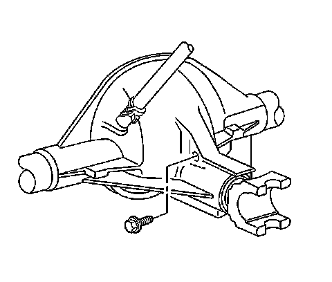

Rear Axle Lubricant Level Inspection (9.5 HD Axle)
Rear Axle Lubricant Level Inspection (9.5 HD Axle)
Important: All axle assemblies are filled by volume of fluid during production. They are not filled to reach a certain level. When checking the fluid level on any axle, variations in the readings can be caused by factory fill differences between the minimum and the maximum fluid volume. Also, if a vehicle has just been driven before checking the fluid level, it may appear lower than normal because the fluid has traveled out along the axle tubes and has not drained back to the sump area. Therefore, a reading taken five minutes after the vehicle has been driven will appear to have a lower fluid level than a vehicle that has been stationary for an hour or two. Remember that the rear axle assembly must be supported to get a true reading.
1. Raise and support the vehicle. Refer to Lifting and Jacking the Vehicle.
2. Ensure the vehicle is level.
3. Inspect the rear axle for leaks. Repair as necessary.
4. Clean the area around the rear axle fill plug.

5. Remove the rear axle fill plug.
6. Inspect the lubricant level.
The lubricant level should be between 0-10 mm (0-0.4 in) below the fill plug opening.
7. If the level is low, add lubricant until the level is even with the bottom edge of the fill plug opening. Use the proper fluid. Refer to Fluid and Lubricant Recommendations.
Notice: Refer to Fastener Notice.
8. Install the rear axle fill plug.
Tighten the rear axle fill plug to 33 Nm (24 lb ft).
9. Lower the vehicle.